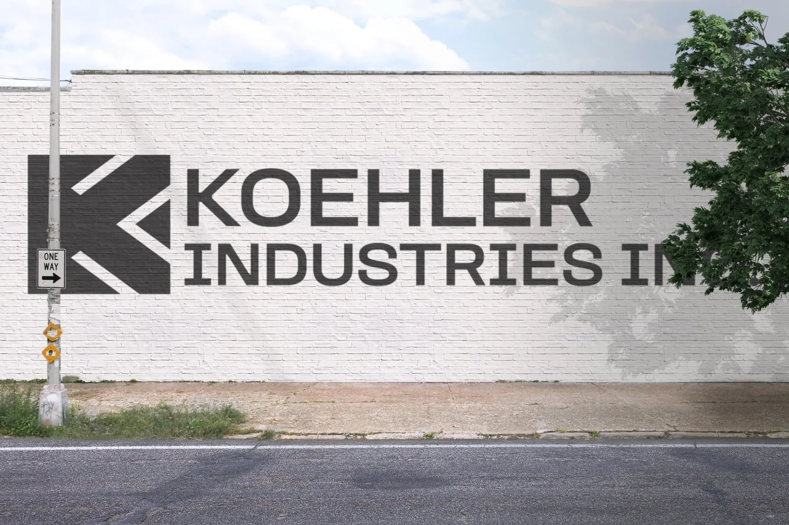
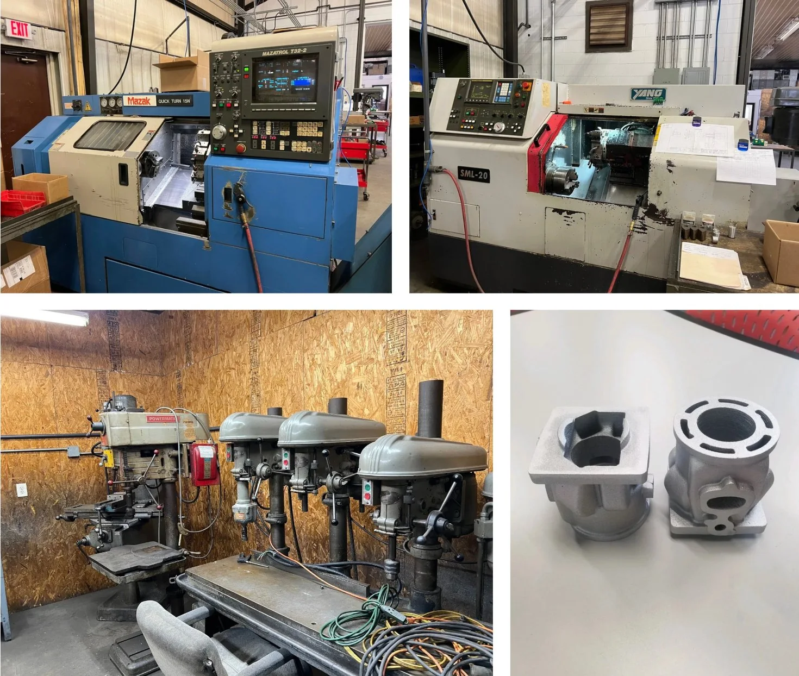
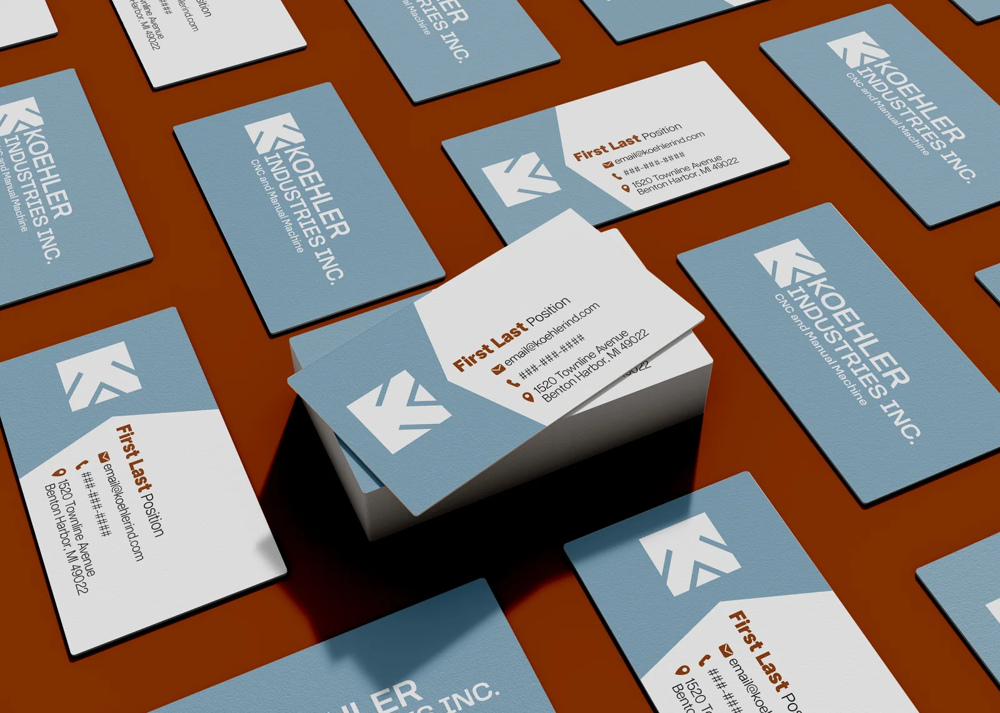

Koehler Industries
A full rebrand for a tool-and-die manufacturer under new ownership, balancing industrial strength with a cleaner, more contemporary presence.

A new chapter that needed a new identity.
Koehler Industries is a small machinery and tool-and-die company that was bought by new owners. With the change in ownership, the existing identity no longer reflected the company's direction, values, or ambitions, so they decided to rebrand. I was brought on to design a multi-use logo and a full set of stationery for the company.
The challenge was to create something that felt both industrial and modern, honoring the precision of the work while making a highly technical industry feel more accessible and cohesive. It also had to be practical: working everywhere from a business card to a billboard, easily adaptable, and durable enough to be printed directly onto machinery.
Grounded in the realities of the shop.
Working closely with the new owner, I learned what Koehler does, what tool and die actually is, and what they wanted from the new brand. A site visit let me see the materials, forms, and processes firsthand. Throughout my research I was drawn to the colors inside the shop, the inorganic shapes, the strong materials, and the industrial environment itself, all of which became the foundation for the identity.
The approach came down to a few principles: ground the identity in the physical environment of the shop, balance structure and clarity to reflect both precision and growth, simplify everything into a cohesive, scalable system, and position the brand to feel credible to industry clients while staying approachable to new audiences.

A precise mark, and a system to grow into.
Inspired by the K in Koehler and the sharp angles of the shop, I designed a logo symbol that emulates the parts Koehler Industries makes. I developed multiple directions for the client, talked through changes together, and delivered a complete package: business cards for each team member with a template for future hires, a Microsoft Office–integrated letterhead, and a concise logo, color, and style guide.
The result is a clear, consistent visual foundation that translates industrial complexity into something structured and modern, delivered on time while adapting to the client's evolving needs, and positioning the company for growth under its new ownership.
